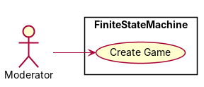
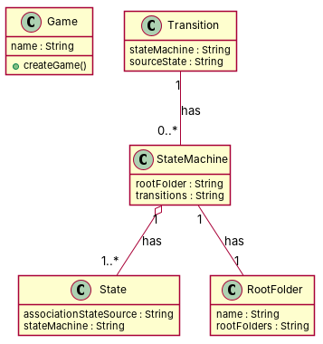

← all cases
D2/FiniteStateMachine — model qwen, condition B, run 1
1. Requirements (input)
R1: A MgaObject has one String attribute called name
R2: Transition of finite state machines
R3: A FSM (may) have a state
R4: A FSM (may) have a state machine
R5: A root folder has a name
R6: A FiniteStateMachine has a class that is an AssociationStateState
R7: A transition has one and only one a state machine.
R8: A state has one and only one StateMachine
R9: A state has one or more association state source
R10: A state machine has one and only one root folder
R11: A state machine may have a transition or many or not
R12: A root folder may have root folders, potentially many.
R13: An association state has one and only one transition
R14: An association state has one or many source state
2. Result 1 → Result 2 (ambiguity removal)
Red, struck-through: removed by ambiguity removal; green: added.
| classes (6 → 4) |
|---|
| AssociationState |
| Fsm |
| RootFolder |
| State |
| StateMachine |
| Transition |
| attributes (3 → 2) |
|---|
| AssociationState.source state |
| RootFolder.name |
| State.association state source |
| relations (7 → 5) |
|---|
| has: AssociationState -> Transition |
| has: Fsm -> StateMachine |
| has: Fsm -> State |
| has: StateMachine -> RootFolder |
| has: StateMachine -> Transition |
| has: State -> StateMachine |
| has: Transition -> StateMachine |
| has: Fsm -> RootFolder |
| has: Fsm -> Transition |
| has: State -> Fsm |
| has: Transition -> Fsm |
3. Ambiguity tags
| id | req | type | cue | status | readings / explanation |
|---|
| A1 | R9 | quantifier | one or more | resolved | one association state source; many association state sources
The requirement specifies that a state can have one or more association state sources, which is a quantifier ambiguity. |
| A2 | R11 | coordination | noun or noun | open | A state machine may have a transition; A state machine may have many transitions or none
The requirement is ambiguous regarding whether a state machine can have zero, one, or multiple transitions. |
| A3 | R14 | quantifier | one or many | resolved | An association state has one source state; An association state has many source states
The requirement specifies that an association state can have one or many source states, which is a quantifier ambiguity. |
4. Diagrams generated from the shared model
usecase diagram
class diagram
5. Code skeleton (Python; Java in code/java/)
"""Code skeleton generated from the shared model of D2/FiniteStateMachine.
Every class and method records the requirement(s) it traces to."""
from __future__ import annotations
import dataclasses as _dc
import enum as _enum
import typing as _t
@_dc.dataclass
class Game:
"""Source: R1"""
name: _t.Optional[str] = None
def createGame(self) -> None:
"""Realizes UC1 "Create Game" (R1)."""
raise NotImplementedError
@_dc.dataclass
class State:
"""Source: -"""
associationStateSource: _t.Optional[str] = None
stateMachine: _t.Optional[str] = None
@_dc.dataclass
class Transition:
"""Source: -"""
stateMachine: _t.Optional[str] = None
sourceState: _t.Optional[str] = None
stateMachines: _t.List["StateMachine"] = _dc.field(default_factory=list)
@_dc.dataclass
class StateMachine:
"""Source: -"""
rootFolder: _t.Optional[str] = None
transitions: _t.Optional[str] = None
states: _t.List["State"] = _dc.field(default_factory=list)
@_dc.dataclass
class RootFolder:
"""Source: R5, R12"""
name: _t.Optional[str] = None
rootFolders: _t.Optional[str] = None
6. Validation, checks and traceability
| python_compiles | True |
|---|
| java_compiles | True |
|---|
| attribute_mismatches | 0 |
|---|
| method_mismatches | 0 |
|---|
| use_cases | 1 |
|---|
| use_cases_without_actor | 0 |
|---|
| use_cases_without_method | 0 |
|---|
| actors_without_use_case | 0 |
|---|
| relations_to_unknown_class | 0 |
|---|
| inconsistencies | 0 |
|---|
| inconsistency_rate | 0.0 |
|---|
| requirement_coverage | 0.4286 |
|---|
| validator fixes | |
|---|
| assumptions for open ambiguities | [{"tag": "A3", "assumption": "A state machine may have a transition or many or none, as stated in the ambiguity decision."}] |
|---|
7. Scores against the reference
| element | P | R | F1 | TP/FP/FN |
|---|
| classes | 0.8 | 0.667 | 0.727 | 4/1/2 |
| attributes | 0.111 | 0.333 | 0.167 | 1/8/2 |
| relations | 1.0 | 0.333 | 0.5 | 3/0/6 |
| relations_strict | 1.0 | 0.333 | 0.5 | 3/0/6 |